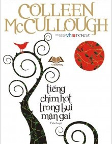

|  |
TIẾNG CHIM HÓT TRONG BỤI MẬN GAI Danh sách chương Đọc từ đầu |
|
Tác giả: Colleen McCulough Loại truyện: Tiểu thuyết Nguồn: sưu tầm Lượt xem: 37,909 Tình trạng: Hoàn thành |
Truyện Tiếng Chim Hót Trong Bụi Mận Gai, chuyện tiểu thuyết hiện đại nói về một cặp trai gái yêu nhau họ đã trải qua biết bao nhiêu sóng gió mới tới được bên nhau. Truyện tình của họ có thể nói là một truyền thuyết, họ phải bất chấp tất cả hi sinh luôn cả gia đình để đến bên nhau. Cuộc sống thử ban đầu rất thử thách và khổ sở, đôi lần họ cũng từng cãi vả nhau những chuyện không đáng nhưng rồi tất cả cũng qua được Ranh Giới. Cuối cùng thì tình yêu chân thật cũng đã đủ thử thách tất cả và hai bên gia đình cũng đã chấp nhận họ và có được một tổ ấm riêng cho mình. |